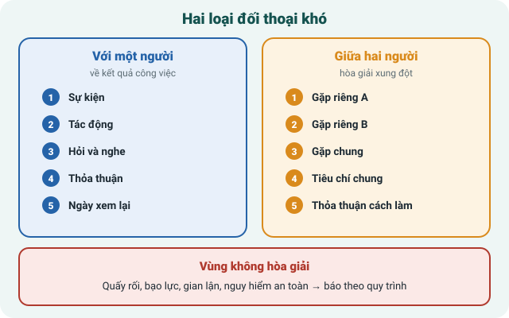

K8 · Làm việc nhóm và tôn trọng khác biệt › Bậc 4 Thành thạo
Xử lý xung đột và đối thoại khó trong đội
Bài này làm Tờ 5: Phiếu chuẩn bị đối thoại khó. Mẫu in. Bài nâng cao từ Gỡ bất đồng chuyên môn (N4). Bài dạy kỹ năng nói chuyện, không thay quy trình kỷ luật của đơn vị.
1. Mục tiêu
- Chuẩn bị đối thoại khó bằng phiếu 6 bước, bắt đầu từ sự kiện cụ thể.
- Hòa giải xung đột giữa hai thành viên: gặp riêng từng người, rồi gặp chung.
2. Khởi động truy xuất
- Bốn bước câu hỏi của buổi 1-1 coaching là gì?
- Ba trường hợp nào nên chỉ dẫn trực tiếp thay vì coaching?
Đáp án
- Mục tiêu, thực tế, lựa chọn, bước tiếp.
- Việc gấp; việc liên quan an toàn hoặc pháp lý; người mới chưa có kiến thức nền.
Xem lại: Lắng nghe để coaching.
3. Giải thích
Đối thoại khó là cuộc nói chuyện có mâu thuẫn, cảm xúc cao, hoặc hậu quả lớn. Ví dụ: nhân viên làm chưa đạt, hai người trong đội không chịu làm cùng nhau. Né cuộc nói chuyện thì vấn đề thường lớn dần.
Phiếu chuẩn bị có 6 bước.
- Sự kiện: việc gì, ngày nào, số liệu nào. Không dùng lời nhận xét như "em vô trách nhiệm".
- Tác động: việc đó ảnh hưởng đến khách, đội, kết quả ra sao.
- Câu mở đầu: một, hai câu, nói thẳng chủ đề. Đừng vòng vo khen trước.
- Hỏi và nghe: "Em thấy chuyện này thế nào?" Có thể có lý do bạn chưa biết.
- Cùng tìm cách: người kia đề xuất trước, bạn bổ sung.
- Thỏa thuận, ngày xem lại: ai làm gì, đến khi nào, ghi lại.

Hòa giải hai thành viên. Gặp riêng từng người trước. Nghe hết, không phán xét, không hứa bênh ai. Sau đó gặp chung. Nhắc lại tiêu chí chung, như hạn của khách hay chất lượng sản phẩm. Hai người cùng thỏa thuận cách làm việc, bạn ghi lại.
Giữ bình tĩnh khi cuộc nói chuyện nóng lên. Nói chậm lại. Tóm lại ý người kia. Nếu cần, hẹn nói tiếp sau vài giờ. Nhưng phải hẹn giờ cụ thể, không bỏ lửng.
Vùng không hòa giải
- Quấy rối, bạo lực, đe dọaBảo vệ người bị ảnh hưởng, báo theo quy trình.
- Gian lận, nguy hiểm an toànDừng việc, báo cấp có thẩm quyền.
- Có thể dẫn tới kỷ luậtLàm theo nội quy, hỏi bộ phận nhân sự.
Kỷ luật lao động có quy định riêng trong Bộ luật Lao động và nội quy của đơn vị. Bài này không hướng dẫn quy trình đó.
4. Ví dụ tại nơi làm việc Việt Nam
Tình huống giả định. Chị Duyên là quản lý kho ở một công ty phân phối linh kiện tại Bắc Ninh. Bình, thủ kho 4 năm, đi trễ ca sáng 4 lần trong 2 tuần.
Chị chuẩn bị Tờ 5. Sự kiện: trễ 4 lần, từ 20 đến 40 phút, các ngày 3, 5, 10 và 12. Tác động: hai xe giao hàng phải chờ, một khách bị trễ hàng. Câu mở đầu: "Chị muốn nói về chuyện em đến trễ ca sáng hai tuần nay."
Khi được hỏi, Bình kể mẹ mới nằm viện, sáng nào cũng phải đưa cơm. Chị Duyên tóm lại và hỏi Bình muốn xử lý thế nào. Bình đề xuất đổi sang ca chiều trong một tháng. Chị bổ sung: Bình tự tìm người đổi ca, báo trước khi đổi.
Hai bên ghi thỏa thuận và hẹn xem lại sau hai tuần.
Vì sao cách này tốt: chị mở đầu bằng sự kiện, không bằng lời trách. Chị hỏi và nghe trước, nên biết lý do thật. Giải pháp do Bình đề xuất, có ngày xem lại.
5. Thực hành
Tình huống giả định. Bạn là trưởng nhóm thiết kế ở một công ty quảng cáo tại TP.HCM. Minh và Hằng cãi nhau trong nhóm chat chung. Minh nói Hằng gửi file muộn, Hằng nói Minh đổi yêu cầu liên tục. Khách đang chờ bản thiết kế thứ Sáu.
Viết các bước bạn sẽ làm. Viết câu mở đầu khi gặp riêng từng người.
Gợi ý 1
Gặp riêng trước hay gặp chung trước? Vì sao?
Gợi ý 2
Tiêu chí chung mà cả hai đều quan tâm là gì?
Lời giải mẫu
- Ngay hôm nay: nhắn vào nhóm chat: "Mình sẽ nói riêng với Minh và Hằng chiều nay. Mọi người tiếp tục việc của mình."
- Gặp riêng Minh: "Anh muốn nghe em kể chuyện file thiết kế tuần này, từ đầu."
- Gặp riêng Hằng: câu mở đầu tương tự. Nghe hết, không hứa bênh ai.
- Gặp chung: nhắc tiêu chí chung: khách nhận bản thiết kế thứ Sáu, đúng yêu cầu đã chốt.
- Thỏa thuận: chốt yêu cầu bằng văn bản trước 10 giờ thứ Tư; sau đó đổi gì phải qua trưởng nhóm; Hằng gửi bản nháp trước 17 giờ thứ Năm.
- Xem lại: sau khi giao khách, 15 phút nhìn lại cách phối hợp.
6. Tự kiểm tra
Chọn đáp án. Mỗi lựa chọn đều có giải thích.
Câu 1. Câu mở đầu nào tốt nhất cho cuộc nói chuyện về báo cáo nộp trễ?
-
Chưa đúng. Khen vòng vo trước làm người nghe bối rối, và lời khen sau này cũng bị nghi ngờ.
-
Đúng. Đúng. Câu ngắn, nói thẳng chủ đề, dựa trên sự kiện có thể kiểm tra.
-
Chưa đúng. Đây là nhận xét tính cách. Người nghe sẽ phòng thủ thay vì tìm cách sửa.
Câu 2. Hai nhân viên xung đột. Bạn nên làm gì trước?
-
Chưa đúng. Gặp chung ngay khi còn nóng dễ thành cãi nhau tiếp, mỗi người chỉ lo bảo vệ mình.
-
Đúng. Đúng. Gặp riêng giúp mỗi người nói thật và bớt căng, trước khi gặp chung.
-
Chưa đúng. Né thì xung đột thường lớn dần và ảnh hưởng cả đội.
Câu 3. Trong 1-1, một nhân viên kể bị đồng nghiệp nhắn tin quấy rối. Bạn làm gì?
-
Chưa đúng. Quấy rối nằm trong vùng không hòa giải. Bắt hai người gặp nhau có thể gây thêm tổn thương.
-
Đúng. Đúng. Đây là việc cần xử lý theo quy trình, có người có thẩm quyền, không phải chuyện hòa giải.
-
Chưa đúng. Bỏ qua khiến người bị quấy rối không được bảo vệ, và hành vi có thể tiếp diễn.
Câu 4. Cuộc nói chuyện nóng lên, bạn thấy mình sắp to tiếng. Cách nào hợp lý?
-
Chưa đúng. To tiếng làm cuộc nói chuyện căng thêm, và người kia khó nghe bạn nói gì.
-
Đúng. Đúng. Tạm dừng có hẹn giờ giúp hai bên bình tĩnh mà việc không bị bỏ lửng.
-
Chưa đúng. Bỏ lửng thì vấn đề vẫn còn đó, và lần sau còn khó nói hơn.
7. Phản tư
- Cuộc nói chuyện khó nào bạn đang né? Bạn đã né bao lâu rồi?
- Khi bị phản bác, bạn thường nói nhanh hơn hay chậm lại?
8. Áp dụng thật
Trong 7 ngày tới, chọn một cuộc nói chuyện bạn đang né. Làm Tờ 5. Hẹn ngày nói, và hẹn luôn ngày xem lại.
9. Siêu dữ liệu
| skill | K8 · Làm việc nhóm và tôn trọng khác biệt |
|---|---|
| level | Bậc 4 · Thành thạo |
| group | N5 |
| framework_map | CSfW: 2b Connect and work with others; 2c Recognise and utilise diverse perspectives; SkillsFuture CCS: Collaboration; Communication; NACE: Teamwork; Communication; LifeComp: S1 Empathy; S3 Collaboration (chỉ dẫn chiếu) |
| updated | 2026-11-14 |
Hoàn thành bài
Đánh dấu đã học để site gợi ý lịch ôn sau 1, 3 và 7 ngày. Dữ liệu chỉ lưu trên máy của bạn.
Lịch ôn gợi ý: